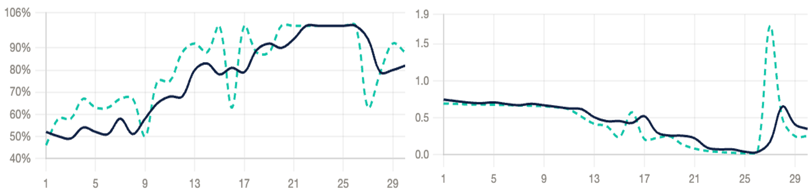

Webcam Video
Live feed captured via OpenCV at ~30fps
Building real-time AI systems to make communication more accessible


It is estimated that there are around 25,000 people in the UK who primarily communicate using British Sign Language (BSL), and yet mainstream video conferencing tools provide no real-time transcription for signers - creating a significant accessibility gap in social, educational, and professional interactions. For those 25,000 BSL users, a £0 webcam could replace £3,000+ specialist captioning equipment.
This project investigates the feasibility of real-time BSL transcription into English captions using a standard webcam under real-world conditions. The goal is to explore whether machine learning techniques, specifically Long Short-Term Memory (LSTM) networks which capture temporal patterns across sequential hand movements, can recognise BSL signs and translate them into real-time captions.
While prior research has achieved promising results for American Sign Language, BSL is underrepresented and differs substantially in grammar, vocabulary, and structure. BSL's two-handed alphabet alone doubles the landmark complexity per frame compared to ASL approaches. This project aims to address that gap by focusing specifically on BSL, and by investigating the technical challenges; including dataset size, variability in signing, and real-time processing, to understand how inclusive communication technologies can be developed.
Automatic sign language recognition has been explored extensively for American Sign Language, but BSL remains underrepresented. The two languages differ significantly — BSL's two-handed alphabet alone doubles the landmark complexity per frame, making existing ASL models unsuitable for direct use.
| Feature | BSL | ASL |
|---|---|---|
| Alphabet | Two-handed | One-handed |
| Grammar | Topic-comment structure | Subject-object-verb |
| Origin | Martha's Vineyard + French SL | French Sign Language |
| Intelligibility | Not mutually intelligible — separate language systems | |
| Datasets | Very limited | Well-studied |
You sign into a webcam AND English captions appear on screen in real time. Here's how it works under the hood:
Live feed captured via OpenCV at ~30fps
Hand landmark detection: 21 points per hand, up to 2 hands (126 features per frame)
35 frames buffered into a sequence, saved as a .npy array (shape: 35 × 126)
Long Short-Term Memory network captures temporal gesture patterns — trained with TensorFlow / Keras on 60 self-collected samples per sign
Classified sign displayed as a real-time text caption overlay
This project presents a proof-of-concept system demonstrating that real-time BSL transcription is feasible under real-world constraints. The current prototype is validated on a small set of signs (GOOD, BAD), using a deliberately limited dataset to test whether stable real-time performance can be achieved on consumer hardware.
The central challenge — and focus of ongoing work — is scaling this approach to a larger vocabulary with more diverse training data while maintaining real-time performance.
While the dataset is intentionally small, early training results show clear convergence and consistent real-time predictions for trained signs.

Training loss decreasing over 30 epochs, with convergence from epoch ~13 onward.
Have feedback, ideas, or just want to chat about the project? I'd love to hear from you!